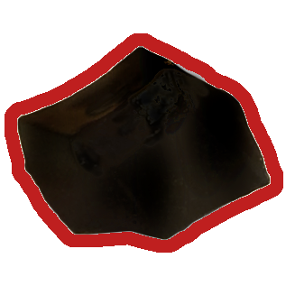
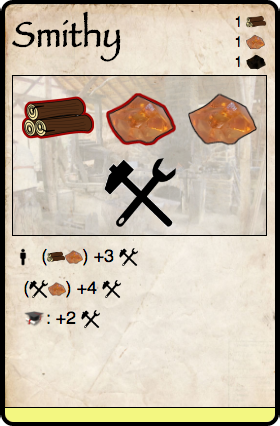

Trade
Trade makes Prosperius tick. It's designed to move quickly, and for good reason - you don't get any choice in the matter! It's all up to your villagers' needs and wants.
Demand
Demand comes in various forms, but it always represents the same thing: a need or want for a good of some kind. Your villagers will automatically demand a number of goods such as Food, Clothes, and all Luxury Goods. Your locations might demand certain goods to complete their construction or to take actions on the location.
Your villagers' needs take priority over the locations in your village. Similarly, your village as a whole takes priority over other villages. Therefore it is only possible to trade goods with other players if you have surplus goods.
In other words, when determining demand, use the following rules for importance:
Your population > your locations > other villages
Your village is always open to trading for goods that they need or want, or for trading away surplus goods. You do not get to hold back goods from another player, or to 'demand' goods that your villagers and locations do not explicitly demand.
Fulfill your demand! (the golden rule)
If you acquire goods through producing, gathering, trading, etc., you should immediately fulfill your village's demand. Any large uncovered image of a game piece is considered to be demanded. Eg. if you chop down trees and have an under-construction location that requires wood, immediately place wood on the card's demand indicators.
Similarly, set aside the food your village will use this round in your Home card. This food is not available for trade (as it will be eaten).
Goods can be moved between demand. For example, if you have two locations under construction, one of which has wood placed on it, you can move the wood to be on the other location.
Required Goods
Some locations are inoperable without a specific good. For example, a Smithy is useless without 1 Wood (for the furnace) and 1 Metal (for the Tools). To make this as clear as possible, any such demand is highlighted to indicate its necessity:



Notice that the Smithy requires 1 Wood and 1 Metal, but it functions at a higher output with Tools, more Metal, and Education.
Food Demand
Your villagers prefer eating quality food over Bread, no matter what (eg. Fish, Fruit, Meat, etc). This is true even if you would gain no extra points by consuming quality food instead. Your bread will last forever, unlike most other food, making it an excellent backup food. See Bread is Special for details.
Similarly, your villagers prefer to eat bread than Wheat. This is true even if you would gain no extra Prosperity by consuming bread. Lastly, luxury food (such as Cream) supersedes quality food.
The priority when determining what can be eaten, then, is as follows:
Luxury food > Quality food > Bread > Wheat
Food trade order
Note that food must be offered in the same order when trading. Otherwise, you could potentially sell all of the above types of food to the same player!
Trading goods
Before anything else, make absolutely sure that your own demand, both on your population and locations, is satisfied. One at a time, starting with the Straggler:
- Offer each good in your stockpile to other players.
- If offering food, use the order described above.
- Players that demand that particular good speak up.
- Starting from the player on your left and going around, attempt to fully satisfy that player's demand.
- Take 3 points for each good you sell to that player. Luxury goods are worth more!
- The buying player simply takes the good and immediately satisfies their demand.
The order of goods (usually) doesn't matter, but the order of players does! You may find that you can't sell a good because another player sold it first, or that other players get the goods you wanted. The Straggler therefore has the best chance of selling their goods.